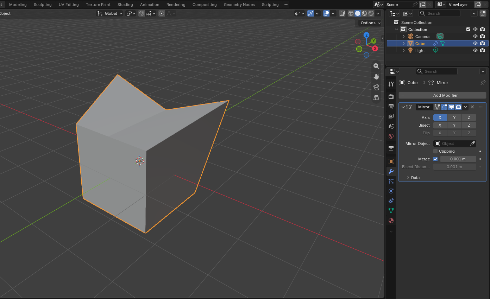
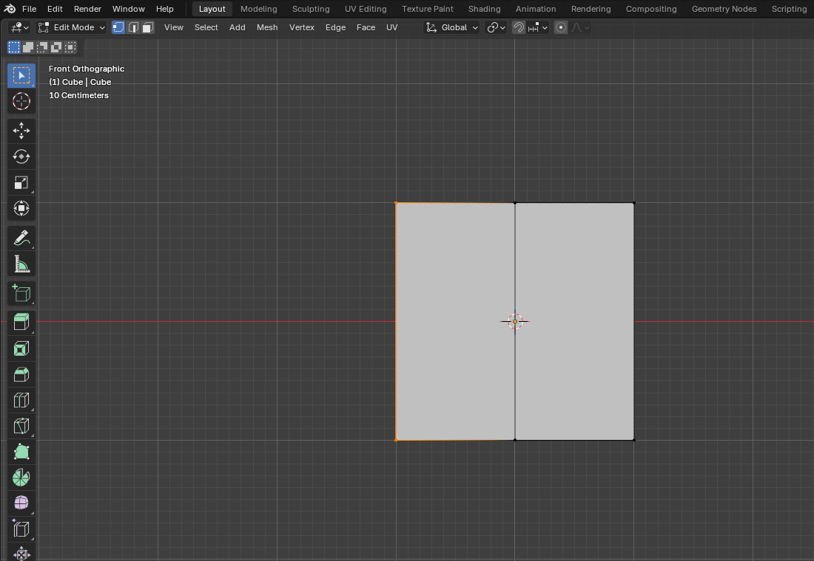

Lesson 7: Mirror modifier
What Mirror does
Most real objects are symmetric, like a mug, a helmet, or a logo shape. The Mirror modifier copies your geometry across an axis, so you only model one half. A modifier is a setting that changes the object without changing the original mesh. You can turn it off or change it at any time.

Steps
- Tool Add a cube: press Shift + A, then Mesh > Cube.
- Key Press Tab for Edit Mode. Click the vertex select icon, the first of the three small icons next to Edit Mode at the top left.
- Key Cut the cube down the middle. Hover over the cube's top front edge, the one that runs left to right. Press Ctrl + R, and a yellow line appears down the middle. Click once, then right-click so the line stays centered.
- In the 3D View, choose View > Viewpoint > Front. Then press Option + Z to see through the cube.
- Mouse Drag a box around the left half, covering every corner left of the middle line. Those corners turn orange.

- Key Press X and choose Vertices. The left half is gone, and you can see inside the open box. Press Option + Z again to stop seeing through.
- Key Press Tab to return to Object Mode.
- In the Properties panel, click the blue wrench tab (Modifiers). Click Add Modifier, then Generate > Mirror.
- Check The full cube is back, and both sides match. The Axis X button is blue.
- Key Press Tab for Edit Mode. Click a corner on the right side, press G, and move it. Click to confirm.
- Check The left side moved too. Blender copied your change across the middle.
Why cut the middle first: a plain cube has corners only at its edges, not in the middle. Without the cut, deleting the left side leaves one flat wall, and Mirror can only copy that wall. The cut gives you a clean half box, and Mirror's Merge setting seals the seam.
Project: mirror block
A symmetric block made from one half. Start from a new cube, cut it down the middle, delete the left half, and mirror it. Save as mirror-block.blend.